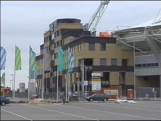
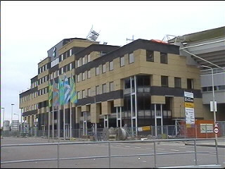
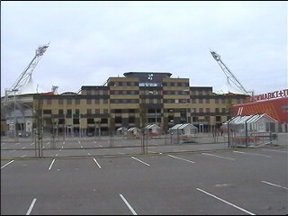
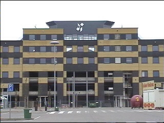
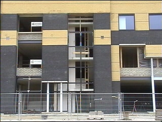
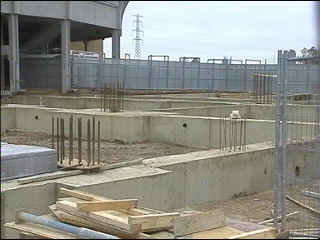

|
Vordering bouw westgevel 11-11-2001 |

Het gaat nu erg snel. Het gebouw steekt royaal
boven de omloop uit.

Van de kuip-vorm van het PLS blijft niks over.

Slechts de lichtmasten verraden nog dat dit een
stadion is.

Merkwaardige top...

Een trappenhuis.

De basis van de discotheek die op oost komt.
©KPD